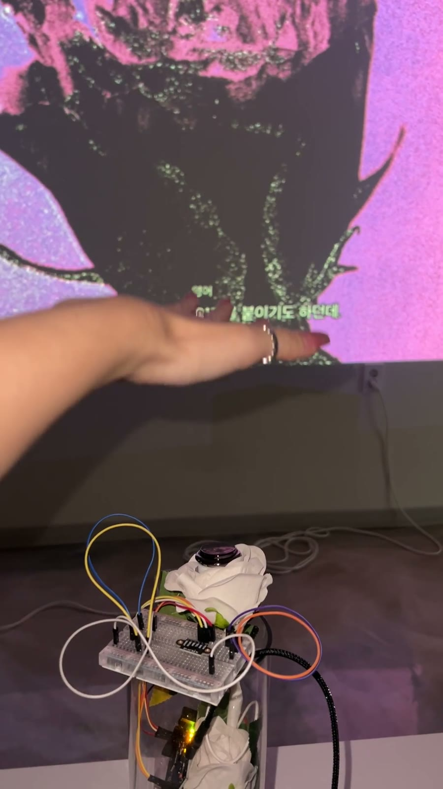

Meta Rose: The Funeral

A funeral for the self I have killed. What becomes of the parts of ourselves we repeatedly try to remove?
Overview
Meta Rose: The Funeral considers the parts of the self suppressed in pursuit of an acceptable image. The funeral becomes a setting in which to encounter what has been excluded, altered or left behind. Living roses inserted into a skeletal form bring vitality and mortality into the same physical structure, while touch-responsive sound, light and moving image connect the installation to participants’ actions.
The exhibition comprises four parts: Naming, Intervention, Witness and Record. Each establishes a different relationship between a body and an image—through touch, gesture, proximity or observation. The four parts are conceived as distinct encounters rather than a prescribed sequence. Together, the works place care beside damage and beauty beside discomfort, approaching ambivalence as the coexistence of conflicting states.
01 / Naming
Holding the skeleton’s hand, visitors touch living roses. Each flower activates a distinct layer of sound, light and image. Sustained contact deepens a response, while touching different roses combines layers into a changing audio-visual composition. The encounter is shaped not only by which flower is touched but also by duration and combination.
A chosen configuration can be captured and later given a name. Naming follows the encounter rather than determining it in advance: participants do not have to select an emotional category before engaging with the installation. The resulting image and words become a record of a particular moment within an open-ended composition.
02 / Intervention
Camera-based gesture tracking and a responsive controller connect the participant’s actions to a digital skeletal body. Visitors alter its balance and vitality, bringing intervention into view as an action with consequences. Rose and skeleton, care and damage, the self who acts and the self who watches occupy the same image.
A software-edition proposal based on this part of the exhibition is being developed as RE:INTERVENTION. The proposal considers a defined version of the work and the conditions for presenting it beyond the original installation; its acquisition terms remain separate from the exhibition documentation.

03 / Witness
A rose initially appears blurred and distorted. Three acts of proximity slow the passing image, allowing another face of the rose to emerge while the surrounding world continues to move. Attention becomes a form of participation: approaching and remaining with the image changes the conditions under which it can be seen. The work brings the participant’s time into contact with a temporal process that cannot simply be held still.

04 / Record
A silent, looping film returns attention to the making of the exhibition. Hands, failed tests, cuts, connections and repeated labour remain visible, rather than disappearing behind a completed surface. This record sits alongside the responsive works as an account of the material and bodily work that precedes an audience’s encounter.
Participation, traces & material time
A connected phone interface offers a place to retain selected images and written responses. These traces record participation and choices within the work; they are not presented as an objective reading of someone’s emotional state. The distinction is central to the project’s developing inquiry into how affective experience might be recorded without reducing it to a fixed label.
The roses also change through handling, drying and decay. Their time differs from a digital system that can restart. Photographs preserve particular appearances of these materials, but do not reverse the changes themselves. This tension between a repeatable image and an irreversible living process connects The Funeral to Park’s continuing documentation of roses after exhibition.

Presentation
Presented as a solo exhibition at Mijin Floor, Yeonnam-dong, Seoul, from 15 to 18 August 2026, as part of Seoul Fringe Festival. A further presentation at Melbourne Fringe Festival is forthcoming in 2026.
Software edition
RE:INTERVENTION
A software work developed within The Funeral. Explore acquisition possibilities and the conditions for presenting the work.
Acquisition details →